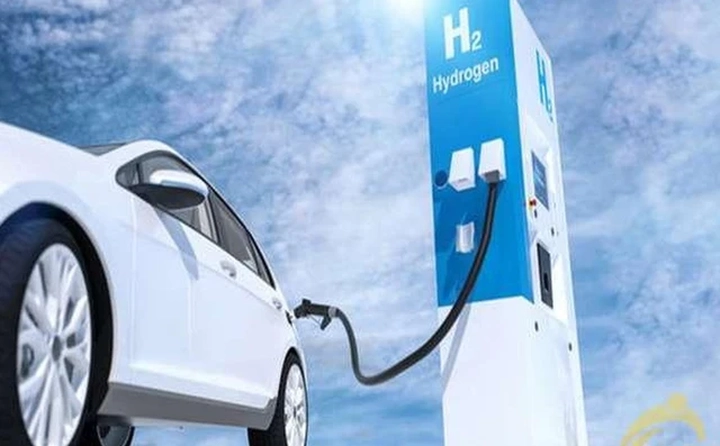
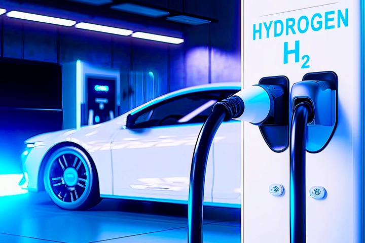
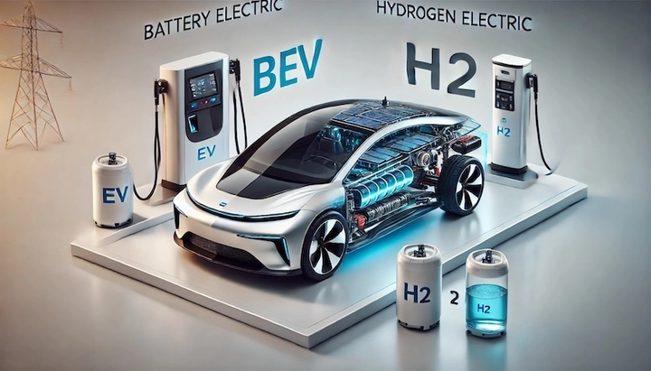
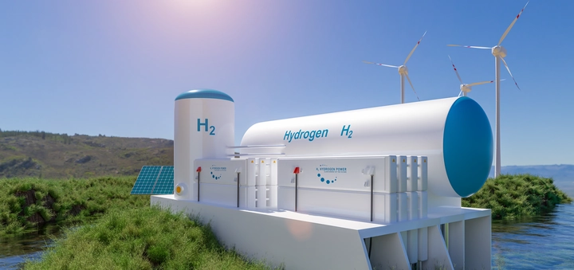
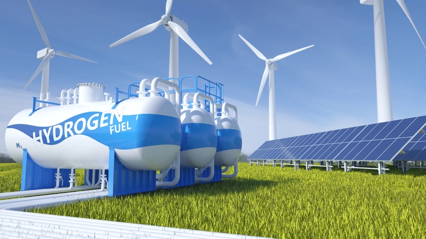

Pin hydro – Giải pháp năng lượng sạch cho tương lai
Trong bối cảnh toàn cầu đang đối mặt với biến đổi khí hậu nghiêm trọng, lượng khí nhà kính gia tăng từng năm và nguồn năng lượng hóa thạch dần cạn kiệt, hydro nổi lên như một “dầu mỏ xanh” – nguồn năng lượng sạch, tiềm năng và gần như vô tận. Khác với nhiên liệu truyền thống, hydro khi được sử dụng trong pin nhiên liệu chỉ tạo ra nước tinh khiết, không thải ra CO₂ hay các chất gây ô nhiễm, từ đó mở ra viễn cảnh một nền công nghiệp không khí thải và giao thông hoàn toàn thân thiện môi trường.
1. Khi hydro trở thành “dầu mỏ xanh” của thế kỷ 21
Hydro không chỉ đơn thuần là nguồn nhiên liệu thay thế cho xăng dầu hay than đá; nó còn được xem là trụ cột của năng lượng sạch toàn cầu, có thể tích hợp trong mọi lĩnh vực từ xe điện hạng nặng, máy bay, tàu thủy đến các nhà máy điện quy mô lớn. Với khả năng lưu trữ và vận chuyển dễ dàng hơn so với năng lượng điện trực tiếp từ pin, hydro hứa hẹn sẽ là giải pháp chiến lược cho những quốc gia tìm cách cân bằng giữa nhu cầu năng lượng tăng cao và cam kết giảm phát thải carbon.
Đặc biệt, hydro xanh – loại hydro được tạo ra từ điện phân nước sử dụng năng lượng tái tạo như gió, mặt trời hoặc thủy điện – đang trở thành tâm điểm nghiên cứu và đầu tư. Không chỉ giúp giảm thiểu khí thải trong sản xuất, hydro xanh còn có khả năng tạo ra một mạng lưới năng lượng toàn cầu bền vững, nơi năng lượng sạch được sản xuất, lưu trữ và phân phối hiệu quả trên mọi châu lục.

Nhìn rộng ra, hydro có thể định nghĩa lại cách con người vận hành xã hội hiện đại: từ phương tiện giao thông cá nhân đến các trung tâm công nghiệp lớn, tất cả đều có thể vận hành mà không phụ thuộc vào nhiên liệu hóa thạch, giảm thiểu tác động lên môi trường và mở ra một kỷ nguyên năng lượng mới – kỷ nguyên của hydro. Chính vì vậy, nghiên cứu và ứng dụng hydro không chỉ là xu hướng công nghệ, mà còn là nhiệm vụ sống còn đối với hành tinh trong thế kỷ 21.
2. Pin hydro là gì? Nguyên lý hoạt động cơ bản
Pin hydro, hay còn gọi là hydrogen fuel cell, là một thiết bị công nghệ cao có khả năng chuyển hóa năng lượng hóa học của hydro trực tiếp thành điện năng. Về cơ bản, nguyên lý hoạt động khá đơn giản nhưng lại cực kỳ tinh vi và hiệu quả: hydro được đưa vào cực âm của pin, trong khi oxy (thường lấy từ không khí) đi vào cực dương. Quá trình phản ứng điện hóa xảy ra tại màng điện phân, nơi proton từ hydro di chuyển qua màng trong khi electron đi theo mạch ngoài, tạo ra dòng điện phục vụ cho các thiết bị.
Điểm đặc biệt khiến pin hydro trở nên “sạch bậc nhất” chính là sản phẩm đầu ra duy nhất là nước tinh khiết và nhiệt lượng thấp, hoàn toàn không phát thải CO₂ hay các chất độc hại khác. Điều này biến pin hydro thành một giải pháp năng lượng lý tưởng cho môi trường, đặc biệt trong bối cảnh các quốc gia đang tìm cách giảm phát thải khí nhà kính. Không chỉ cung cấp điện năng, pin hydro còn có thể được kết hợp với các nguồn năng lượng tái tạo khác, tạo ra một hệ sinh thái năng lượng hoàn toàn xanh và bền vững.
Ngoài ra, pin hydro có khả năng hoạt động liên tục trong thời gian dài mà không giảm hiệu suất, khác biệt hoàn toàn so với pin truyền thống. Điều này giúp chúng phù hợp cho các ứng dụng từ xe điện, tàu thủy, máy bay đến các nhà máy điện quy mô lớn, mở ra kỷ nguyên mới cho năng lượng sạch và linh hoạt.
3. Các loại pin hydro phổ biến hiện nay
Pin hydro không phải là một công nghệ “một cỡ cho tất cả”. Trên thị trường hiện nay, có nhiều loại pin hydro với thiết kế và ứng dụng khác nhau, trong đó nổi bật nhất là:
-
PEMFC (Proton Exchange Membrane Fuel Cell): Đây là loại pin phổ biến nhất cho các phương tiện di chuyển như xe ô tô và xe buýt điện. PEMFC có ưu điểm nhỏ gọn, khởi động nhanh, công suất cao, dễ dàng tích hợp vào các phương tiện hạng nhẹ và trung bình. Tuy nhiên, chúng yêu cầu hydro có độ tinh khiết cao và màng điện phân nhạy cảm với nhiệt độ.
-
SOFC (Solid Oxide Fuel Cell): Loại pin này hoạt động ở nhiệt độ cao từ 600–1000°C, thích hợp cho công nghiệp nặng và phát điện quy mô lớn. SOFC có hiệu suất chuyển đổi năng lượng rất cao, nhưng thời gian khởi động lâu và yêu cầu vật liệu chịu nhiệt tốt, phù hợp hơn cho các trạm điện cố định.
-
AFC (Alkaline Fuel Cell): Được sử dụng nhiều trong quân sự và các ứng dụng không gian, AFC có ưu điểm đơn giản, hiệu suất ổn định. Tuy nhiên, chúng nhạy cảm với CO₂ và không thích hợp cho môi trường mở, vì phải được bảo vệ để duy trì hiệu suất.
-
MCFC (Molten Carbonate Fuel Cell): Thích hợp cho các nhà máy điện quy mô lớn, MCFC sử dụng màng điện phân carbonat nóng chảy, cho phép phát điện liên tục với hiệu suất ổn định. Loại pin này có khả năng tận dụng khí thải CO₂ từ các nhà máy khác, biến nó thành một giải pháp năng lượng tương đối “xanh” trong môi trường công nghiệp.

Mỗi loại pin hydro đều có ưu nhược điểm riêng, phục vụ các ứng dụng khác nhau – từ phương tiện di động cá nhân đến phát điện công nghiệp. Sự đa dạng này cho thấy tiềm năng khổng lồ của hydro trong việc đáp ứng nhu cầu năng lượng trên toàn cầu.
4. Ưu điểm nổi bật của pin hydro
Pin hydro mang trong mình nhiều lợi thế vượt trội, khiến chúng trở thành ứng cử viên sáng giá cho năng lượng tương lai:
-
Hiệu suất cao: Không giống pin thông thường, pin hydro chuyển hóa trực tiếp năng lượng hóa học thành điện năng, giảm thất thoát nhiệt và tăng hiệu quả sử dụng năng lượng. Đây là lý do tại sao pin hydro được xem là tối ưu cho các phương tiện đòi hỏi công suất lớn và thời gian vận hành liên tục.
-
Không phát thải CO₂: Khi hydro phản ứng với oxy, sản phẩm duy nhất là nước tinh khiết, hoàn toàn không sinh ra khí nhà kính hay các hợp chất độc hại. Điều này giúp pin hydro trở thành giải pháp lý tưởng trong cuộc chiến chống biến đổi khí hậu và ô nhiễm môi trường.
-
Hoạt động êm ái: Pin hydro không tạo ra rung động hay tiếng ồn đáng kể, khác hẳn với động cơ đốt trong hay máy phát điện truyền thống. Đây là lợi thế lớn trong các ứng dụng đòi hỏi sự yên tĩnh như xe điện, tàu thủy hay các khu dân cư.
-
Lưu trữ lâu dài: Hydro có thể được tích trữ dễ dàng dưới dạng khí nén hoặc lỏng, cho phép sử dụng như một giải pháp dự phòng cho năng lượng tái tạo. Khi điện gió hay điện mặt trời dư thừa, năng lượng đó có thể được dùng để điện phân nước, tạo ra hydro, từ đó tạo ra một chuỗi năng lượng liên tục, bền vững.
-
Tính linh hoạt ứng dụng: Pin hydro có thể tích hợp trong nhiều lĩnh vực khác nhau, từ xe điện, máy bay, tàu thủy, đến các nhà máy điện công nghiệp. Đây chính là lý do các quốc gia đang đầu tư mạnh mẽ vào nghiên cứu và phát triển công nghệ này, coi hydro như nền tảng năng lượng cho thế kỷ 21.
5. Những thách thức còn tồn tại
Dù pin hydro mang trong mình tiềm năng khổng lồ, việc triển khai rộng rãi vẫn phải đối mặt với nhiều thách thức kỹ thuật, kinh tế và hạ tầng.
Trước hết là chi phí sản xuất cao. Một tế bào nhiên liệu hydro hiện nay đắt gấp nhiều lần so với các loại pin lithium-ion thông thường, đặc biệt là các hệ thống dùng cho phương tiện giao thông. Chi phí này chủ yếu đến từ vật liệu quý hiếm (như platinum dùng làm chất xúc tác) và quá trình chế tạo phức tạp để đảm bảo hiệu suất và tuổi thọ lâu dài.
Tiếp theo là hạ tầng lưu trữ và vận chuyển. Hydro, dù nhẹ và dồi dào, lại khó lưu trữ và vận chuyển an toàn do tính dễ cháy, nổ cao. Việc thiết lập các trạm nạp hydro, ống dẫn, bình chứa áp suất cao đòi hỏi tiêu chuẩn nghiêm ngặt, vốn tốn kém và phức tạp, chưa được phổ biến rộng rãi ở nhiều quốc gia.
Cuối cùng, nguồn hydro “xanh” vẫn còn hạn chế. Phần lớn hydro hiện nay được sản xuất từ khí tự nhiên (hydro xám), tạo ra khí thải CO₂. Điều này làm giảm đi tính bền vững môi trường vốn là ưu điểm lớn nhất của pin hydro. Cho đến khi nguồn hydro sạch, tái tạo đủ rộng rãi và hạ tầng đồng bộ, việc phổ cập pin hydro vẫn còn là một thách thức lớn.
6. Công nghệ sản xuất hydro xanh – chìa khóa của tương lai bền vững
Hydro xanh là tương lai của năng lượng sạch, và công nghệ sản xuất hydro quyết định mức độ bền vững của toàn bộ chuỗi năng lượng. Hydro xanh được tạo ra thông qua quá trình điện phân nước, tách nước thành hydro và oxy bằng năng lượng từ nguồn tái tạo như điện gió, điện mặt trời hay thủy điện.
Khác với hydro xám, sản xuất từ khí tự nhiên kèm thải CO₂, hoặc hydro xanh lam, cần xử lý khí thải, hydro xanh thực sự không phát thải carbon trong suốt quá trình tạo ra. Đây chính là yếu tố quyết định để pin hydro trở thành giải pháp năng lượng thực sự sạch, đáp ứng các mục tiêu khí hậu toàn cầu.

Hơn nữa, hydro xanh mở ra cơ hội tích hợp với năng lượng tái tạo. Khi nguồn điện mặt trời hay gió dư thừa, năng lượng này có thể dùng để điện phân nước, lưu trữ dưới dạng hydro, và khi cần thiết, pin hydro lại chuyển hóa thành điện, tạo thành một chuỗi năng lượng liên tục, linh hoạt và sạch. Đây là bước tiến quan trọng để con người thoát khỏi sự phụ thuộc vào nhiên liệu hóa thạch và tiến gần hơn tới một tương lai năng lượng bền vững.
7. Ứng dụng thực tế của pin hydro trong đời sống và công nghiệp
Pin hydro đã chứng minh được tính linh hoạt và tiềm năng ứng dụng rộng rãi trong nhiều lĩnh vực, từ giao thông, công nghiệp đến đời sống hàng ngày.
-
Xe hơi: Các mẫu xe hydro nổi tiếng như Toyota Mirai hay Hyundai Nexo sử dụng pin hydro làm nguồn năng lượng chính, giúp vận hành liên tục hàng trăm km chỉ với một lần nạp nhiên liệu, đồng thời không thải CO₂. So với xe điện truyền thống, xe hydro có ưu thế về thời gian nạp nhanh và tầm hoạt động dài.
-
Tàu thủy và máy bay thử nghiệm: Trong các phương tiện lớn, pin hydro cho phép vận hành lâu, hiệu suất ổn định và giảm thiểu tiếng ồn. Một số dự án thử nghiệm cho tàu chở hàng và máy bay không phát thải đang sử dụng pin hydro để giảm phụ thuộc vào nhiên liệu hóa thạch, mở ra triển vọng cho vận tải xanh toàn cầu.
-
Phát điện dự phòng: Pin hydro được ứng dụng làm nguồn điện dự phòng cho các cơ sở quan trọng như bệnh viện, trung tâm dữ liệu và thành phố thông minh. Khả năng cung cấp điện liên tục trong nhiều giờ, thậm chí ngày, giúp đảm bảo hoạt động của các hệ thống thiết yếu mà không cần lo ngại về mất điện.
-
Thiết bị di động và robot: Pin hydro cũng được thử nghiệm trong các thiết bị di động và robot công nghiệp, cung cấp năng lượng liên tục mà không cần sạc nhiều lần, đặc biệt hữu ích trong môi trường xa xôi, ngoài trời hoặc các nhà máy không thể dùng nguồn điện truyền thống.
Nhìn chung, pin hydro không chỉ là công nghệ của tương lai, mà đang dần trở thành giải pháp hiện thực, đáp ứng nhu cầu năng lượng sạch và bền vững của thế giới. Với sự phát triển của công nghệ hydro xanh, các ứng dụng này hứa hẹn sẽ trở nên phổ biến và tác động mạnh mẽ đến mọi lĩnh vực trong đời sống và công nghiệp.

8. Cuộc đua toàn cầu: Nhật Bản, Hàn Quốc, châu Âu và Mỹ trong lĩnh vực pin hydro
Trên bản đồ năng lượng toàn cầu, cuộc đua pin hydro đang diễn ra đầy sôi động, với mỗi khu vực có chiến lược và ưu tiên riêng, minh chứng cho tiềm năng to lớn và tính cấp thiết của công nghệ này.
Nhật Bản là quốc gia dẫn đầu về ứng dụng thương mại pin hydro. Toyota Mirai không chỉ là biểu tượng, mà còn là bản thí nghiệm thực tế cho mô hình giao thông xanh. Các thành phố lớn như Tokyo đã xây dựng một mạng lưới trạm nạp hydro dày đặc, giúp xe hydro vận hành liên tục và giảm đáng kể khí thải CO₂ trong giao thông đô thị.
Hàn Quốc không kém cạnh, đặc biệt là Seoul, nơi chính phủ đầu tư mạnh vào hạ tầng trạm nhiên liệu hydro và triển khai các mẫu xe hydro cho cả cá nhân lẫn doanh nghiệp. Các dự án thử nghiệm tại các khu công nghiệp đang cho thấy tiềm năng vận hành dài hạn, hiệu suất ổn định và khả năng tích hợp với năng lượng tái tạo trong nước.
Châu Âu tập trung vào mô hình quy hoạch dài hạn. Đức và Hà Lan đang thử nghiệm các dự án “hydrogen highway”, nhằm tạo ra các tuyến đường dài kết nối các thành phố bằng mạng lưới trạm hydro, hướng tới giao thông hoàn toàn không phát thải. Những nỗ lực này được xem là nền tảng cho chiến lược EU carbon-neutral 2050, khi hydro đóng vai trò chủ lực trong hệ sinh thái năng lượng sạch.
Mỹ đặt trọng tâm vào nghiên cứu hydro xanh và các ứng dụng quy mô công nghiệp. Các bang như California và Texas triển khai các dự án pin hydro tích hợp năng lượng tái tạo, từ điện gió, điện mặt trời đến thủy điện, nhằm tạo ra nguồn hydro sạch phục vụ giao thông, nhà máy và hệ thống lưới điện thông minh.
Cuộc đua toàn cầu này cho thấy pin hydro không còn là viễn cảnh tương lai xa, mà đang hình thành thành một thực tại năng lượng mới, thúc đẩy đổi mới công nghệ, hạ tầng và chính sách trên khắp hành tinh.
9. Tiềm năng phát triển tại Việt Nam
Việt Nam sở hữu nguồn năng lượng tái tạo phong phú, bao gồm gió, mặt trời, thủy điện và sinh khối, tạo nền tảng thuận lợi cho việc phát triển hydro xanh. Khí hậu và địa hình trải dài từ Bắc vào Nam giúp tận dụng tối đa năng lượng mặt trời và gió, cung cấp điện sạch để điện phân nước tạo hydro.
Chính phủ Việt Nam đã bắt đầu thử nghiệm các dự án pin hydro quy mô nhỏ, từ các cơ sở nghiên cứu, bệnh viện đến khu công nghiệp. Những thử nghiệm này không chỉ kiểm chứng tính khả thi về kỹ thuật mà còn mở đường cho việc ứng dụng rộng rãi trong giao thông và năng lượng công nghiệp trong tương lai gần.

Ngoài ra, sự quan tâm từ các doanh nghiệp trong và ngoài nước, cùng với các chính sách hỗ trợ năng lượng sạch, hứa hẹn tạo ra một hệ sinh thái pin hydro bền vững. Trong dài hạn, hydro xanh có thể trở thành một phần quan trọng trong chiến lược năng lượng quốc gia, góp phần giảm nhập khẩu nhiên liệu hóa thạch, giảm phát thải và thúc đẩy nền kinh tế tuần hoàn.
10. Kết luận: Pin hydro – mảnh ghép không thể thiếu trong bức tranh năng lượng sạch
Pin hydro là minh chứng sống cho năng lượng sạch không chỉ là lý thuyết, mà đang trở thành hiện thực trong đời sống và công nghiệp. Với hiệu suất cao, thân thiện với môi trường và khả năng ứng dụng đa dạng, pin hydro không chỉ cung cấp năng lượng cho xe cộ, tàu thủy hay máy bay thử nghiệm mà còn hỗ trợ phát điện dự phòng cho các thành phố thông minh và cơ sở quan trọng.
Hydro đang dần định hình lại cách thế giới sản xuất và sử dụng năng lượng, tạo ra một chuỗi năng lượng linh hoạt từ nguồn tái tạo, giảm phụ thuộc vào nhiên liệu hóa thạch và giảm phát thải khí nhà kính. Khi kết hợp với các nguồn năng lượng sạch khác, pin hydro trở thành mảnh ghép quan trọng, không thể thiếu trong hành trình hướng tới một hành tinh xanh bền vững.
Nhìn vào tương lai, pin hydro hứa hẹn mở ra kỷ nguyên mới cho năng lượng, nơi công nghệ hiện đại hòa quyện cùng môi trường bền vững, và mỗi bước tiến trong nghiên cứu, sản xuất và ứng dụng đều mang lại tác động tích cực lâu dài cho hành tinh và con người.